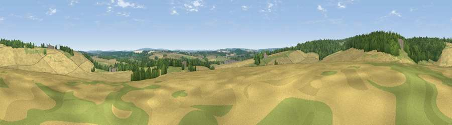

Viewpoint near Upper Froyle
#32580 in England · top 31% of its area beats it · near Upper Froyle · access?Where it is
The exact computed spot (SU 74875 43175). Click the marker for map links.
Public access: no public right of way or access land is recorded at this exact spot — it may be on private land. Computed from Natural England's CRoW access layer and OpenStreetMap rights of way — not the legal definitive map. Always verify locally.
The view, rendered

A 360° render of this exact spot computed from the terrain model, tree cover and land cover — summer colours, afternoon light, calibrated against photographs of famous viewpoints. Real trees, hedges and buildings will differ in detail.
The panorama
Grey silhouette: terrain skyline in each direction (720 bearings, Earth curvature and refraction included). Dashed green: skyline with trees (+15 m) and buildings (+8 m) as obstacles. Blue strip: how far the ground is visible on each bearing.
Where the view opens
Wedge length = distance to the farthest visible ground on that bearing (vegetation-aware). Rings at 10, 25 and 50 km.
What fills the view
50% cropland · 29% woodland · 20% grassland · 1% built-up
Angular shares of the visible panorama (visual magnitude), not map area. Landscape diversity 0.47 (0–1 Shannon).
Key numbers
More beautiful places nearby
The staircase of upgrades: each row has a higher view potential than everything closer. Driving times are estimates from straight-line distance, calibrated against real road routing — check an actual route before setting out.
| Place | Direction | Drive | Score |
|---|---|---|---|
| Viewpoint near Lower Froyle | ENE · 1 km | ~3 min | 38.7 |
| Viewpoint near Holybourne | WSW · 2 km | ~6 min | 43.1 |
| Horsedown Common | NNE · 5 km | ~11 min | 54.8 |
| Noar Hill | S · 11 km | ~21 min | 59.8 |
| Viewpoint near Steep | S · 16 km | ~28 min | 68.7 |
| Viewpoint near Fernhurst | SE · 22 km | ~37 min | 75.1 |
| Viewpoint near Buriton | S · 23 km | ~38 min | 75.3 |
| Viewpoint near Buriton | S · 23 km | ~38 min | 80.0 |
51.18291, -0.93012 · source: screening · position refined by local search. Computed location — check access rights before visiting.